Seungjun Lee
Research Staff, Brookhaven National Laboratory
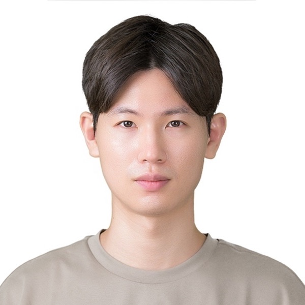
I build machine learning models for complex physical systems. Three threads run through my work: neural operator surrogates that replace expensive PDE solvers, diffusion-based methods for inverse problems on experimental data, and uncertainty quantification for scientific prediction.
At Brookhaven I work on surrogate models for relativistic hydrodynamics, phase retrieval from X-ray diffraction, and test-time scaling for robot policies. I train at scale on NERSC Perlmutter in PyTorch and JAX, and review for NeurIPS, ICML, ICLR, AAAI, and TMLR.
Publications
-
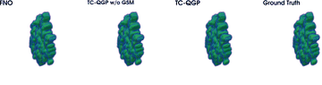
Efficient Surrogate Modeling for Fast Hydrodynamic Evolution of the Quark-Gluon Plasma ICML Workshop on AI for Physics, 2026 paper -
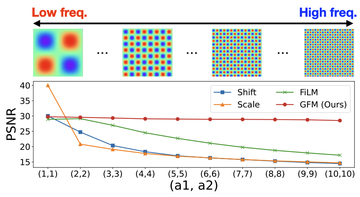
-
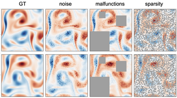
SCENT: Robust Spatiotemporal Learning for Continuous Scientific Data via Scalable Conditional Neural Fields ICML, 2025 paper -
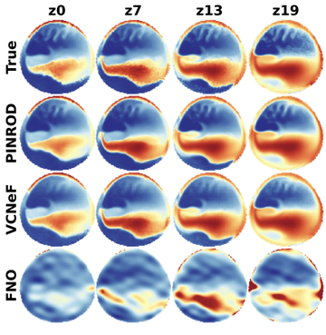
Generalizable Implicit Neural Representations via Parameterized Latent Dynamics for Baroclinic Ocean Forecasting ICLR Workshop on Tackling Climate Change with ML, 2025 paper -
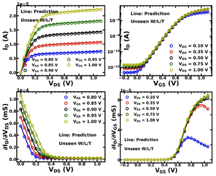
Large-Scale Training in Neural Compact Models for Accurate and Adaptable MOSFET Simulation IEEE Journal of the Electron Devices Society, 2024 paper -
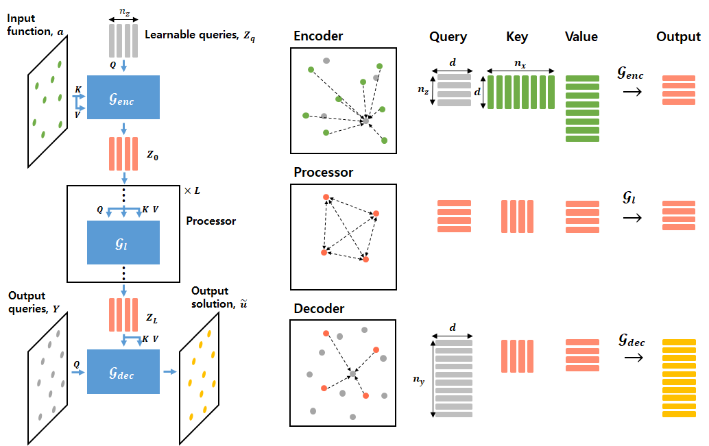
-
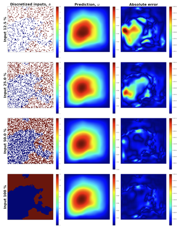
Mesh-Independent Operator Learning for Partial Differential Equations ICML Workshop on AI for Science, 2022 paper -
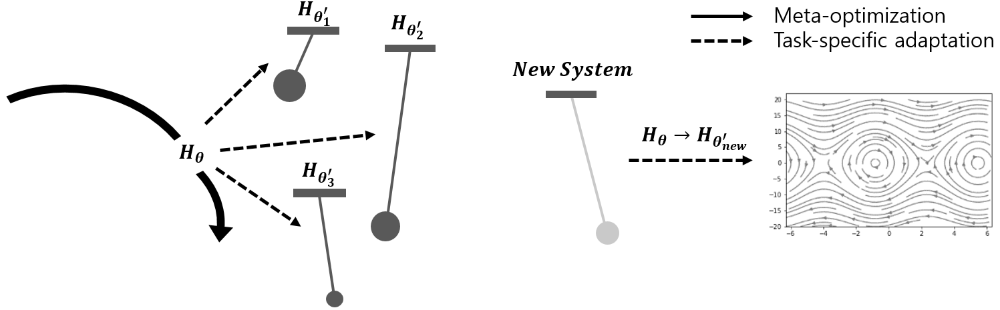
-
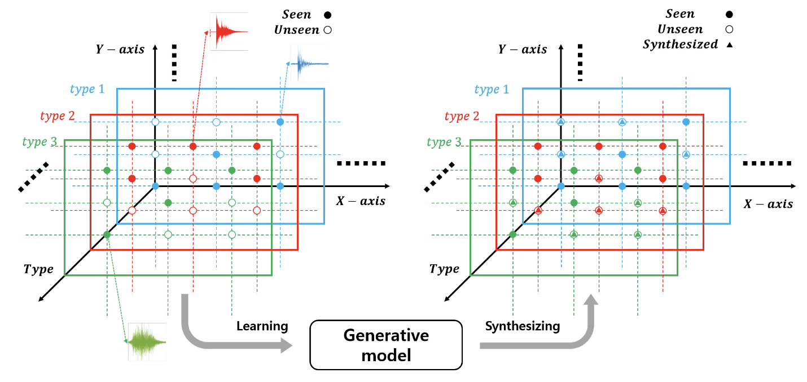
-
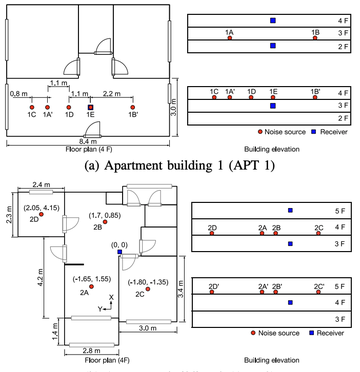
Type/Position Classification of Inter-Floor Noise in Residential Buildings with a Single Microphone via Supervised Learning EUSIPCO, 2020 paper -
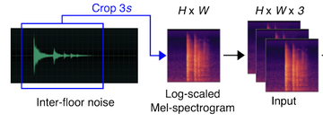
Classification of Inter-Floor Noise Type/Position via Convolutional Neural Network-Based Supervised Learning Applied Sciences, 2019 paper
Selected work
- Neural operator surrogates for quark-gluon plasma hydrodynamics. Replacing 3+1D viscous relativistic hydrodynamic solvers with a tensorized Fourier neural operator, trained on large simulation ensembles for event-by-event heavy-ion physics at RHIC.
- Diffusion-based phase retrieval for X-ray diffraction. Plug-and-play diffusion priors for inverting ptychography and Bragg coherent diffraction data, evaluated on real experimental measurements rather than simulation alone.
- Test-time scaling for vision-language-action policies. Studying when additional inference-time compute improves flow-matching robot policies, and what limits it. Embodied AI LDRD at Brookhaven.
- Neural compact models for semiconductor devices. Large-scale training of MOSFET surrogates for SPICE-compatible circuit simulation at Alsemy.
Background
- 2025 –
- Research Staff, Computing and Data Sciences, Brookhaven National Laboratory
- 2024 – 2025
- Research Associate, Brookhaven National Laboratory
- 2022 – 2024
- AI Researcher, Alsemy, Seoul
- 2017 – 2022
- PhD, Seoul National University. Advisor: Woojae Seong
- 2012 – 2017
- BS, Seoul National University
Awards
- Korean Mathematical Olympiad, Gold (middle school, 2008) and Bronze (high school, 2010)
- Korean Physics Olympiad, Silver (middle school, 2007)
- Outstanding Graduate Student Award, BK21 Program, Ministry of Education (2022)
Reviewing
NeurIPS 2025, 2026. ICML 2026. ICLR 2025, 2026. AAAI 2026, 2027. TMLR 2025.